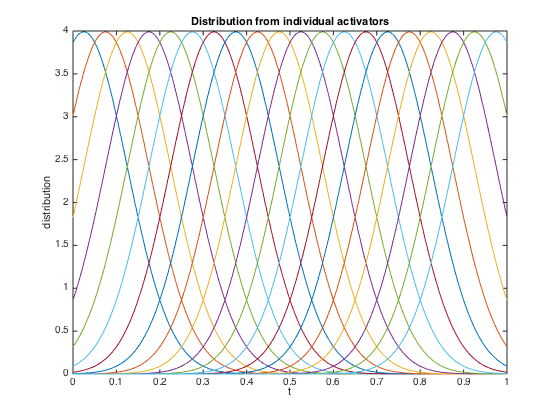
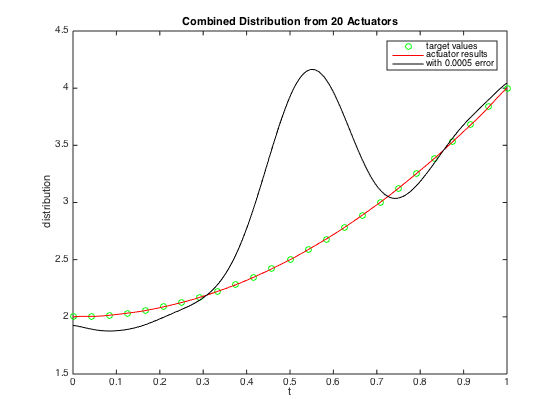
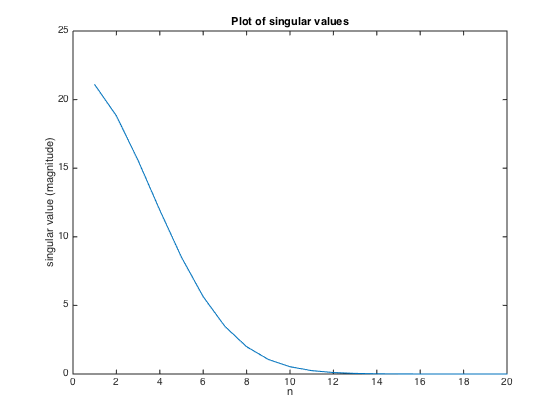
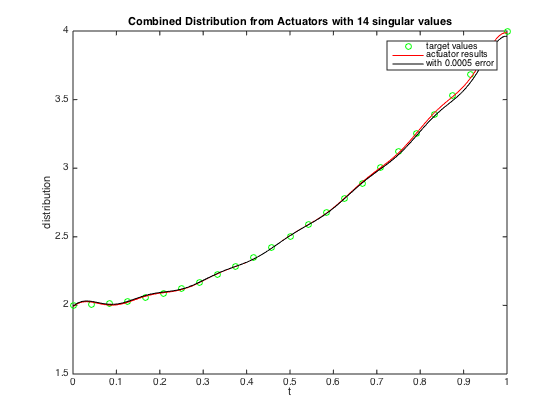
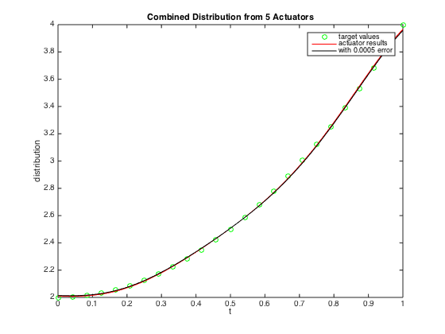
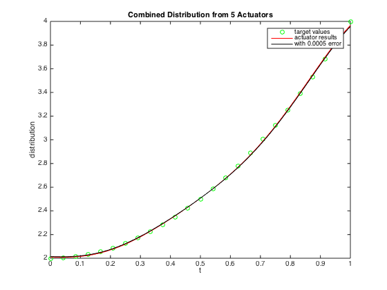

Contents
Demonstration of Unstable Control
In this example we are exploring what happens if you have too many sensors and actuators in a control problem. Suppose we are trying to achieve a particular profile by the linear superposition of a distribution of Gaussian impulses. As an example, suppose each actuator is a hammer which delivers a force distributed over some range (standard deviation of the Gaussian impulse), and whose magnitude is the adjustable parameter we want to solve for. The idea is to determine the distribution of impulse strengths (force applied to each of the hammers) that yields the desired force distribution over the entire range from 0 to 1. We will explore the dependence of the solution on the size of the problem (number of actuators and number of points at which the force is evaluated).
pause
Part 1: Setting up the problem
We begin by setting up the array of actuators and measurement points (points where we will match the distribution) as well as an array for plotting purposes:
echo on nact=20; nmeas=25; tact=linspace(1/nact/2,1-1/nact/2,nact)'; %Where we put the actuators tmeas=linspace(0,1,nmeas)'; %Where we do the measurements tplot=[0:.001:1]'; %an array we will use for plotting things up. % OK, now we want to construct the matrices representing the impulse array. % We will do this both for the points where we will "measure" the % distribution, as well as a more closely spaced array for plotting % purposes: a=zeros(nmeas,nact); %The array for calculation of the solution vector aplot=zeros(length(tplot),nact); %The array for plotting purposes for j=1:nact a(:,j)=pdf('normal',tmeas,tact(j),2/nact); aplot(:,j)=pdf('normal',tplot,tact(j),2/nact); % We take the actuator distribution to be normal, with a s.d. equal to % twice the spacing, so there is a bit of overlap echo off end echo on %Now let's plot up the distribution of all the actuators: figure(1) plot(tplot,aplot) xlabel('t') ylabel('distribution') title('Distribution from individual activators') % We see that each of the actuators yields a distributed force, and that we % can combine these to get the desired distribution. pause echo off
nact=20;
nmeas=25;
tact=linspace(1/nact/2,1-1/nact/2,nact)'; %Where we put the actuators
tmeas=linspace(0,1,nmeas)'; %Where we do the measurements
tplot=[0:.001:1]'; %an array we will use for plotting things up.
% OK, now we want to construct the matrices representing the impulse array.
% We will do this both for the points where we will "measure" the
% distribution, as well as a more closely spaced array for plotting
% purposes:
a=zeros(nmeas,nact); %The array for calculation of the solution vector
aplot=zeros(length(tplot),nact); %The array for plotting purposes
for j=1:nact
a(:,j)=pdf('normal',tmeas,tact(j),2/nact);
aplot(:,j)=pdf('normal',tplot,tact(j),2/nact);
% We take the actuator distribution to be normal, with a s.d. equal to
% twice the spacing, so there is a bit of overlap
echo off
%Now let's plot up the distribution of all the actuators:
figure(1)
plot(tplot,aplot)
xlabel('t')
ylabel('distribution')
title('Distribution from individual activators')
% We see that each of the actuators yields a distributed force, and that we
% can combine these to get the desired distribution.
pause
echo off
 Part 2: The actuator distribution
Now we need to determine the amplitude of each activator that achieves some distribution of measured values. We shall use a quadratic distribution over the domain [0,1] as our target.
echo on % We set up the right hand side vector: b=2+2*tmeas.^2; %for calculation of x bplot=2+2*tplot.^2; %for plotting purposes % The solution is very easy! x=a\b; % And we plot it up: figure(2) plot(tmeas,b,'og',tplot,aplot*x,'r') xlabel('t') ylabel('distribution') legend('target values','actuator results') title(['Combined Distribution from ',num2str(nact),' Actuators']) % This -looks- fine, but we actually have a big problem: The magnitude of % the solution vector x is getting huge! pause % We can see the problem if we look at the solution vector x: x % Note that while we are trying to get "positive" force everywhere, some of % the coefficients are negative: equivalent to banging on the other side of % the plate to get forces to cancel out! We are also very sensitive to % errors in x. Suppose we have a small 0.1% error in each value. What would % our system look like then? pause er=0.0005; xerror=x+er*x.*randn(size(x)); figure(2) plot(tmeas,b,'og',tplot,aplot*x,'r',tplot,aplot*xerror,'k') xlabel('t') ylabel('distribution') legend('target values','actuator results',['with ',num2str(er),' error']) title(['Combined Distribution from ',num2str(nact),' Actuators']) echo off
% We set up the right hand side vector:
b=2+2*tmeas.^2; %for calculation of x
bplot=2+2*tplot.^2; %for plotting purposes
% The solution is very easy!
x=a\b;
% And we plot it up:
figure(2)
plot(tmeas,b,'og',tplot,aplot*x,'r')
xlabel('t')
ylabel('distribution')
legend('target values','actuator results')
title(['Combined Distribution from ',num2str(nact),' Actuators'])
% This -looks- fine, but we actually have a big problem: The magnitude of
% the solution vector x is getting huge!
pause
% We can see the problem if we look at the solution vector x:
x
x =
3.3417
-10.4797
20.3470
-27.7848
28.6041
-18.1237
-4.4082
38.8164
-80.7404
125.8079
-166.7933
198.4298
-214.4700
212.8341
-192.1271
156.6762
-111.6821
67.1541
-30.4611
8.6698
% Note that while we are trying to get "positive" force everywhere, some of
% the coefficients are negative: equivalent to banging on the other side of
% the plate to get forces to cancel out! We are also very sensitive to
% errors in x. Suppose we have a small 0.1% error in each value. What would
% our system look like then?
pause
er=0.0005;
xerror=x+er*x.*randn(size(x));
figure(2)
plot(tmeas,b,'og',tplot,aplot*x,'r',tplot,aplot*xerror,'k')
xlabel('t')
ylabel('distribution')
legend('target values','actuator results',['with ',num2str(er),' error'])
title(['Combined Distribution from ',num2str(nact),' Actuators'])
echo off
 Part 3: The fix: SVD
The difficulty with the problem was that with all these actuators, the matrix was actually close to singularity. Let's do SVD and look at this, as well as figuring out how to fix it!
echo on % First, we do SVD: [u s v]=svd(a); % And we plot up the singular values: ds=diag(s); figure(3) plot(abs(ds)) xlabel('n') ylabel('singular value (magnitude)') title('Plot of singular values') % As you can see, the higher singular values drop off pretty quickly. It % is the last few that are causing all the trouble. pause % We can fix the problem by only keeping some of the singular values: nkeep=ceil(nact/1.5); %We use 2/3 of them smod=zeros(size(s)); smod(1:nkeep,1:nkeep)=diag(ds(1:nkeep)); amod=u*smod*v'; %The modified matrix a with only the larger singular values xmod=amod\b %The new solution vector % Where all the values are much smaller! pause % Now we see how we do (with error as well): xmoderror=xmod+er*xmod.*randn(size(x)); figure(4) plot(tmeas,b,'og',tplot,aplot*xmod,'r',tplot,aplot*xmoderror,'k') xlabel('t') ylabel('distribution') legend('target values','actuator results',['with ',num2str(er),' error']) title(['Combined Distribution from Actuators with ',num2str(nkeep),' singular values']) % So we don't exactly match the desired distribution with a reduced number % of singular values, but we are very close - and we aren't sensitive to % errors in the solution vector. This is important for control problems % where actuators aren't perfect, and thus if you have a solution matrix % that is close to singularity, you will wind up getting instabilities in % the thing you are trying to control. By using the reduced problem, you % are essentially controlling all the actuators in a pattern corresponding % to the first nkeep columns of the matrix V, rather than controlling all % of them individually. pause echo off
% First, we do SVD:
[u s v]=svd(a);
% And we plot up the singular values:
ds=diag(s);
figure(3)
plot(abs(ds))
xlabel('n')
ylabel('singular value (magnitude)')
title('Plot of singular values')
% As you can see, the higher singular values drop off pretty quickly. It
% is the last few that are causing all the trouble.
pause
% We can fix the problem by only keeping some of the singular values:
nkeep=ceil(nact/1.5); %We use 2/3 of them
smod=zeros(size(s));
smod(1:nkeep,1:nkeep)=diag(ds(1:nkeep));
amod=u*smod*v'; %The modified matrix a with only the larger singular values
xmod=amod\b %The new solution vector
Warning: Rank deficient, rank = 14, tol = 4.567551e-14.
xmod =
1.0117
-0.9215
0
1.3042
-0.9127
0
0.9351
-0.4212
0
0.4419
0
0.1966
0
-0.0013
0.7966
0
-1.9434
4.9999
-5.1380
3.0856
% Where all the values are much smaller!
pause
% Now we see how we do (with error as well):
xmoderror=xmod+er*xmod.*randn(size(x));
figure(4)
plot(tmeas,b,'og',tplot,aplot*xmod,'r',tplot,aplot*xmoderror,'k')
xlabel('t')
ylabel('distribution')
legend('target values','actuator results',['with ',num2str(er),' error'])
title(['Combined Distribution from Actuators with ',num2str(nkeep),' singular values'])
% So we don't exactly match the desired distribution with a reduced number
% of singular values, but we are very close - and we aren't sensitive to
% errors in the solution vector. This is important for control problems
% where actuators aren't perfect, and thus if you have a solution matrix
% that is close to singularity, you will wind up getting instabilities in
% the thing you are trying to control. By using the reduced problem, you
% are essentially controlling all the actuators in a pattern corresponding
% to the first nkeep columns of the matrix V, rather than controlling all
% of them individually.
pause
echo off
  Part 4: Smaller numbers of actuators
It is interesting to see what happens if you have a much smaller number of actuators acting over a larger area. We can easily use some "cut and paste" to change this:
echo on nact=5; tact=linspace(1/nact/2,1-1/nact/2,nact)'; %Where we put the actuators a=zeros(nmeas,nact); %The array for calculation of the solution vector aplot=zeros(length(tplot),nact); %The array for plotting purposes for j=1:nact a(:,j)=pdf('normal',tmeas,tact(j),2/nact); aplot(:,j)=pdf('normal',tplot,tact(j),2/nact); % We take the actuator distribution to be normal, with a s.d. equal to % twice the spacing, so there is a bit of overlap echo off end echo on %Now let's plot up the distribution of all the actuators: figure(5) plot(tplot,aplot) xlabel('t') ylabel('distribution') title('Distribution from individual activators') % We see that each of the actuators yields a distributed force, and that we % can combine these to get the desired distribution. % The solution is very easy! x=a\b; % And we plot it up: xerror=x+er*x.*randn(size(x)); figure(6) plot(tmeas,b,'og',tplot,aplot*x,'r',tplot,aplot*xerror,'k') xlabel('t') ylabel('distribution') legend('target values','actuator results',['with ',num2str(er),' error']) title(['Combined Distribution from ',num2str(nact),' Actuators']) % This works just about as well as the larger number of actuators and is % far less sensitive to error! It goes to show that more is not % necessarily better when it comes to stability! echo off
nact=5;
tact=linspace(1/nact/2,1-1/nact/2,nact)'; %Where we put the actuators
a=zeros(nmeas,nact); %The array for calculation of the solution vector
aplot=zeros(length(tplot),nact); %The array for plotting purposes
for j=1:nact
a(:,j)=pdf('normal',tmeas,tact(j),2/nact);
aplot(:,j)=pdf('normal',tplot,tact(j),2/nact);
% We take the actuator distribution to be normal, with a s.d. equal to
% twice the spacing, so there is a bit of overlap
echo off
%Now let's plot up the distribution of all the actuators:
figure(5)
plot(tplot,aplot)
xlabel('t')
ylabel('distribution')
title('Distribution from individual activators')
% We see that each of the actuators yields a distributed force, and that we
% can combine these to get the desired distribution.
% The solution is very easy!
x=a\b;
% And we plot it up:
xerror=x+er*x.*randn(size(x));
figure(6)
plot(tmeas,b,'og',tplot,aplot*x,'r',tplot,aplot*xerror,'k')
xlabel('t')
ylabel('distribution')
legend('target values','actuator results',['with ',num2str(er),' error'])
title(['Combined Distribution from ',num2str(nact),' Actuators'])
% This works just about as well as the larger number of actuators and is
% far less sensitive to error! It goes to show that more is not
% necessarily better when it comes to stability!
echo off
 
